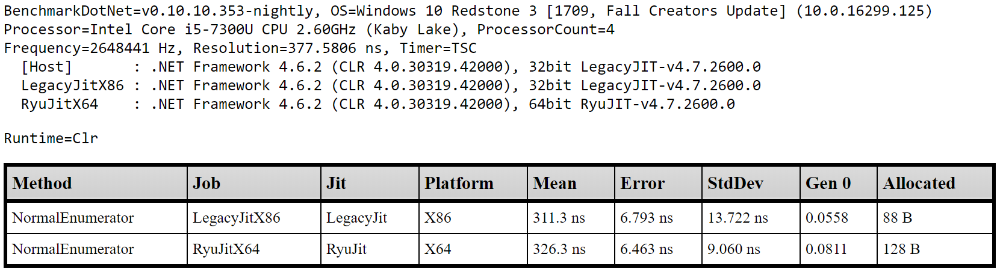
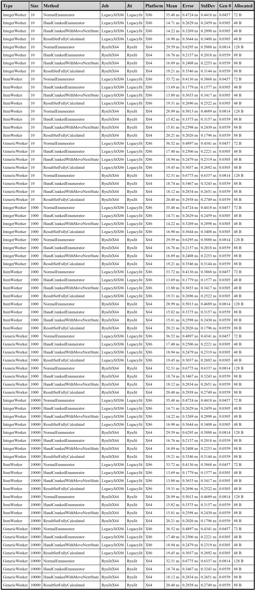
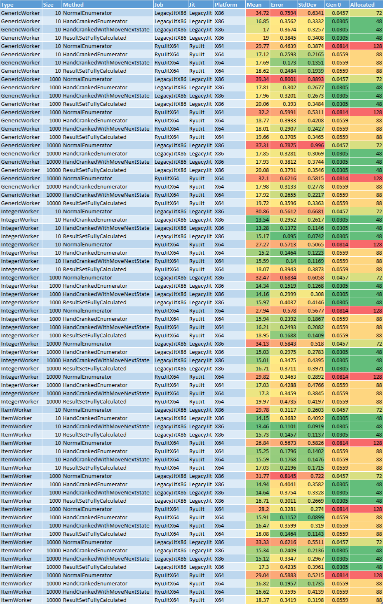
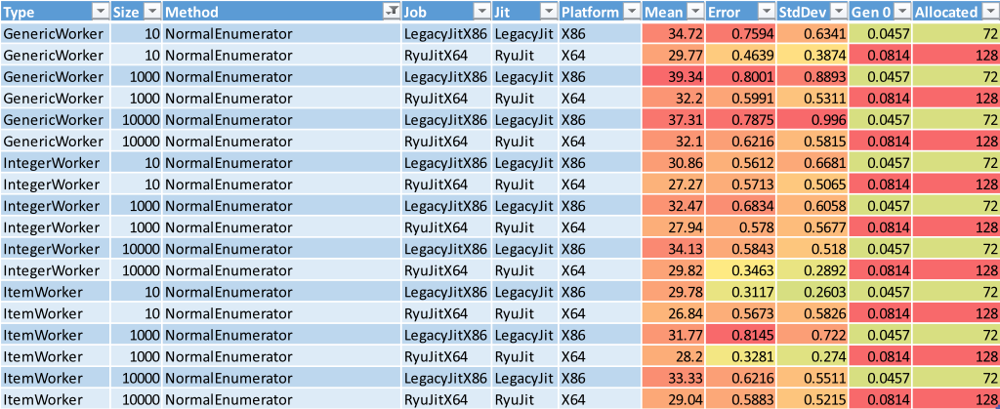
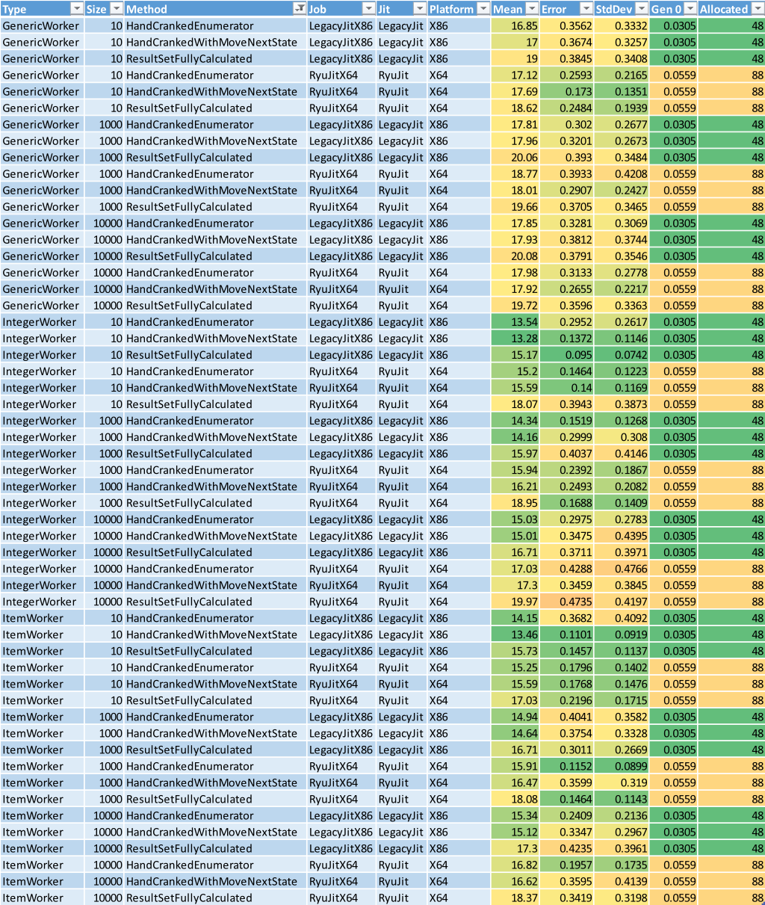
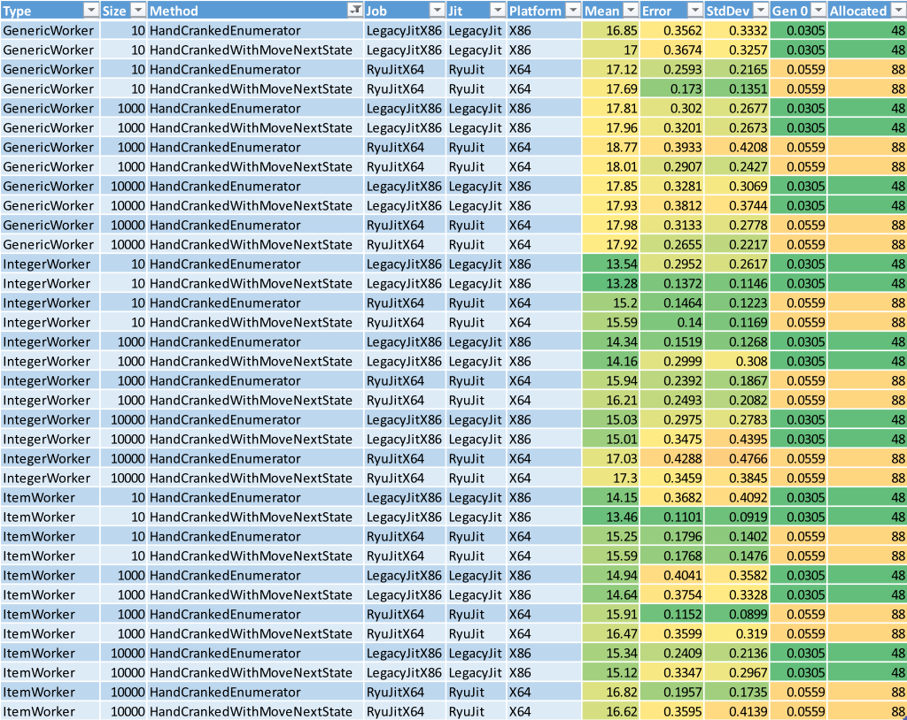
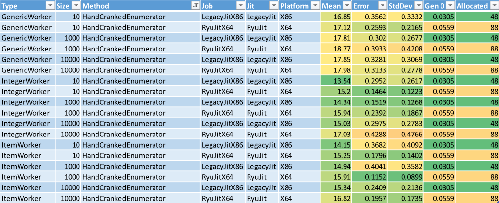

I’m measuring optimal C# code implementations for a game engine I’m building.
Background
I recently took on a “little side project” to pursue a lifelong dream: designing, creating (and releasing!) a computer game. Though I’ve had the desire to do this for more than three and a half decades, I never quite got around to making a consistent, concerted effort. It’s not because I’m lazy, I’ve just managed to pack a whole bunch of experiences into my life so far and, until recently, couldn’t find enough time to devote to the cause.
By “little side project” I’m being a sarcastic of course. I knew when I started this journey that building a game is no trivial feat, and there would be unknown unknowns that would arise and need to be dealt with along the way. That discovery was part of the exciting thing for me because I love learning new things. However, because I really enjoy a challenge (and from the necessity of my circumstances), I made the decision to write the game engine as well; from scratch.
Fortunately I’d pursued life experiences that included all the ingredients I would need to pull off such a feat from both a creative and practical standpoint, including a lengthy career in software engineering and commercial experience in UX design.
I’ll explore the circumstances that drove those initial decisions another time. Right now, it’s enough to know that the game engine is written in C# on UWP using Win2D, and targets Windows tablets and phones that have accelerometer sensors and touch screens. The game is a top-down 2D space shoot ‘em up with a retro arcade look.
Build A Game Engine in C#…Are You Crazy?
When people talk of building game engines, C# and .NET aren’t terribly popular choices. The .NET framework, while a much loved and carefully crafted platform, hasn’t exactly been built for the demands of a high-performing game engine in mind. I don’t think my engine will be too demanding though, so using .NET is a feasible option. Win2D is a powerful ally here, being a finely tuned wrapper over DirectX that is built for performance. Win2D also provides a game-loop that gracefully handles the complexity of loop timing management, so that’s one less thing I needed to worry about.
This leaves the game engine “merely” doing some user input handling, physics, collision detections, game logic, and image rendering. What could go wrong right?  As long as I build with the Garbage Collector in mind, and execute code in tight enough loops, I would hopefully get a smooth 60 frames per second across my target devices. This is a nice engineering challenge that will keep me happily satisfying my inner geek for some time.
As long as I build with the Garbage Collector in mind, and execute code in tight enough loops, I would hopefully get a smooth 60 frames per second across my target devices. This is a nice engineering challenge that will keep me happily satisfying my inner geek for some time.
Performance Front and Centre
I was reasonably sure I could make something decent with my technology choices, and a few test applications later I committed to the task ahead. With a freshly read copy of Bob Nystrom’s amazing eBook Game Programming Patterns up my sleeve, years of mentally constructed game systems and designs that were eager to escape my mind, and the skills I had nurtured over my career, I figured I had a decent shot at a solid result.
But confidence alone was never going to be enough. Going into development of the engine I knew I would have to make every nanosecond count. While the architecture was wholly under my control and I trusted my skills, there was one concern that still hung heavy on my mind; would the .NET Framework itself be performant enough?
There was only one way to know for sure; I was going to have to write performance tests for the framework itself. And when you want to know the performance of .NET code I know of nothing more suited to the task than BenchmarkDotNet.
BenchmarkDotNet and LINQPad
I’m a heavy LINQPad user from way back. Among other things, LINQPad enables me to test hypotheses quickly away from the complexity of my larger code bases. Once I’m happy, I move the validated code into the main codebase and do some manual integration tests. This process works really well for me, so when I found myself needing to test different C# implementation patterns in isolation, LINQPad was a natural choice.
Fortunately for me my timing was just right; BenchmarkDotNet had just added support for running inside LINQPad, and LINQPad had just added support for hosting BenchmarkDotNet. While the road since has been a little bumpy, the state of both tools was good enough to provide what I needed.
Testing Different Iterator Patterns in .NET
I really enjoyed writing my own collision detection system; it’s the kind of challenge I relish. My starting point was an excellent tutorial by Nilson Suoto called Collision Detection for Solid Objects, and after a lot of experimentation I had a really tight system. I had a Sort and Sweep service using cheap AABB checks to find collections of objects with potential collisions (the broad phase), which were used to discover the actual collisions using Minkowski Sums and Convex Hulls of object geometries (the narrow phase). We’re not covering the details of the implementation here, but you should know the narrow phase contains expensive CPU operations and I’ve spent an appropriate amount of time optimising the hell out of them.
Codewise, the Collision Detection system drives the Sort and Sweep service using an iterator pattern. You probably know this pattern from implementing IEnumerable<T>; GetEnumerator() methods that yield appropriate results. This is how I implemented it at first, and it made for some nice, readable code.
However, I had a hunch that this generic interface may not be the most performant way to drive the service, so I devised a plan to test different implementations of the iterator pattern to see if I could find time savings. I also had concerns that the use of generics would add pressure to the .NET Garbage Collector, and as such I was interested in verifying this measuring memory aspects of each implementation as well.
Initial Benchmarks
Switching to LINQPad, I wrote up a Worker class to simulate the Collision Detection system doing expensive work by summing the values yielded by a Driver class, which represented the Sort And Sweep service. Main() simply called the benchmark runner to run with the Worker type. I marked up the Worker with a MemoryDiagnoser to report on memory consumption, and because of my cross device intentions I thought it’s prudent to explore 32bit and 64bit generated code.
The code looked a little like this:
1 | [] |
As well as the usual output appearing in LINQPad’s results window, running this produced a nice set of reports in various file formats in the subfolder \BenchmarkDotNet.Artifacts\results where LINQPad was executing.
Note
You will probably need to run LINQPad as an admin to get it to work.
Here’s an extract from a report running this code:

From this I was able to reason a few things about a single implementation of an iterator pattern on a small sample size of 10 items. This was a good start and served as proof that the concept of measuring performance in this way worked.
Many Rivers to Cross
Thinking ahead, I knew I had challenges to face.
First, an array size of 10 probably wasn’t representative of how big the object arrays would end up in my game. I wasn’t sure how many objects I would need, but I knew performance rarely scales linearly. I wanted to test the same implementations of iterator patterns on array sizes with various orders of magnitude. Unfortunately BenchmarkDotNet didn’t support marking up benchmark methods with injectable parameters (array size in this case), so I had to roll my own solution.
Second, while I knew I could have different implementations inside a single Worker, I would need to be careful not to let the sharing of code scope compromise what I was measuring; the implementations could not affect one another.
Third, the way I simulated actual work in the implementations had to correctly represent code in my original code base that hadn’t been written yet! Without attention to this detail it would be easy for my abstraction to stray from what would be reality, influencing the implementation and not representing a realistic scenario.
Fourth, the implementation code should be reasonably easy to read. I would need to discover where the line was between performance and readability while I thought of innovative implementations.
Fifth, I wanted to explore iterators over different kinds of objects such as value types, reference types, and generic types. The result would guide the object structure forming the basis of my collision detection system.
Finally, I wanted all these tests to run on a single execution run and roll into a single report table. I figured I would use Excel for final analysis so it would be best if the results were automatically collected together so I didn’t have to do any manual amalgamations every time I completed a test run and wanted explored the results.
The Usual Black-Box Challenges
I very quickly discovered that when I performed multiple tests over a single Worker type within the same run, the naming convention BenchmarkDotNet used to create the filenames would result in the overwrite of previous reports. I created a helper class to create backups of report files on disk and track the generated file names. I then added amalgamation of the final report using these backup files using AngleSharp (an open source HTML parser) to rip apart the tables in these files and create my own HTML report.
Along the way I also discovered that LINQPad’s Dump() methods weren’t available when BenchmarkDotNet was running, and would cause a terminating exception. This hampered my ability to verify that iterator implementations were working properly (i.e. actually iterating), so I added a “runmode” state to the helper class that allowed me to switch between manual verification of code (where code is executed using LINQPad and not via BenchmarkDotNet) and producing the benchmark reports (where BenchmarkDotNet controlled the execution and not LINQPad). The “runmode” also let me avoid throwing exceptions by isolating calls to Dump() behind conditional checks.
Finally, I created a state machine that looped through the various implementations, changing the size of the array each time. The state of the machine was another addition to the helper class. The report backup system hooked into this state to generate unique report names, which were used in turn to create the column values in the amalgamated report.
Different Implementations to Test
I thought of 4 different iterator implementations to try out:
- NormalEnumerator
This was theIEnumerable<T>implementation I already had usingGetEnumerator()methods andyieldto return results at appropriate points. - HandCrankedEnumerator
This implementation is a POCO withReset()andMoveNext()methods and anEOFproperty for controlling the loop. Would removing a broad, generic implementation improve performance and reduce memory usage? - HandCrankedWithMoveNextState
This a variation of the previous implementation that eliminated theEOFand returned feedback fromReset()andMoveNext(). This reduced the number of statements required to drive the iterator which I suspected would translate into better performance. - ResultSetFullyCalculated
This avoided iterating altogether, replacing it with a big synchronous operation calculating all the results in one pass and exposing aResultsarray. Obviously this would have higher memory requirements, but would it perform better?
Note
My game engine runs on a single thread. Multi-threaded concerns such as the timing of the read and write of values from different threads did not need to be considered.
Here’s a gist containing a copy of the final LINQPad code:
Amalgamated Report
Once I was sure all the implementations were working correctly I switched on all the benchmarking options I wanted, plugged in some array sizes, and let it run. On my Surface Pro with an i5 processor this took about 42 minutes, but was worth the wait because the data is rich and dense.
Here’s the amalgamated report from one such run.

If you’re used to the usual output columns BenchmarkDotNet produces you’ll recognise where I’ve inserted the other relevant data. The Type and Size columns correspond to the type of Worker (IntegerWorker for value type tests, ItemWorker for reference type tests, and GenericWorkder for generic type tests), and the size of the array used to produce the result. The other columns come straight from the BenchmarkDotNet reports.
Analysing with Excel
With all the data is in one place I wanted to use Excel’s analysis tools to help me compare the results and derive conclusions. Copy and paste as text did the trick, though I did have to strip the alphabetical characters from the numeric columns and change their cell format to a number. Once that was done I used a red-green colour scale conditional formatting on the numeric data to create a performance heat map, and used table filters and sorting to do the analysis.
Here’s the same amalgamated report formatted this way in Excel:

Looking at the Mean column there was an obvious candidate for being too slow; the red cells. Turns out the NormalEnumerator method (the implementation I was already using) was the worst performing, taking almost twice as long as the other methods.

I filtered that method out and dug deeper.

When I looked at the fasted results in each Size group (those with the greenest Mean values), I could see that the ResultSetFullyCalculated method looked suspiciously slow. I checked each ResultSetFullyCalculated method against the other methods in the same Size group by eye and confirmed it; calculating the results in one hit was slower than flowing back and forth between the Worker and the Driver.
aside
This was a pleasant surprise. I had expected a higher memory footprint and a lower execution time. This kind of result is exactly why you need to validate early; it’s much cheaper to build things right the “first time” instead of trying to refactor once you’ve built a whole bunch of stuff on top of a false assumption. I had a real Adam Savage moment with this finding. Science!
Let’s filter out the ResultSetFullyCalculated method and keep digging.

Now we get down to the pointy end of the analysis. With only two methods remaining to compare against each other, there’s nothing much to do but check each pair individually. The results are really close, and difficult to compare due to the variance in Error and StdDev. However the HandCrankedEnumerator is marginally faster in almost every pair. This was a bit of a surprise given I had assumed less statements in the caller would mean less execution time, but without checking the final generated code you can never be sure how such assumptions pan out. The performance difference isn’t significant enough for me to take my investigation that far, so I’ll happily settle on the variant that’s easier to read, maintain, and is generally faster.

How Bad is Your Memory?
Did you notice I haven’t talked at all about the memory usage by any of the implementations? Well, throughout my analysis I was giving them the occasional, cursory glance. The fact is, there wasn’t anything significant to worry about. There was only very small Gen 0 in all implementations apart from NormalEnumerator, which was always the highest memory user in each group and always puts the most pressure on the Garbage Collector.
The general rule of thumb I’ll be taking forward is that for balancing performance and memory concerns, always go with a POCO. Of course, when it counts I’ll still be testing assumptions of course!
Summary
In the end, because of my findings, I refactored my Sort and Sweep service to be a POCO with Reset() and MoveNext() methods and an EOF property for controlling the loop as per the HandCrankedEnumerator test implementation. It really didn’t take long to convert it over, and I now feel confident and satisfied that through my due diligence I’ve squeezed a little more performance out of a crucial game subsystem.
Onward and upward!